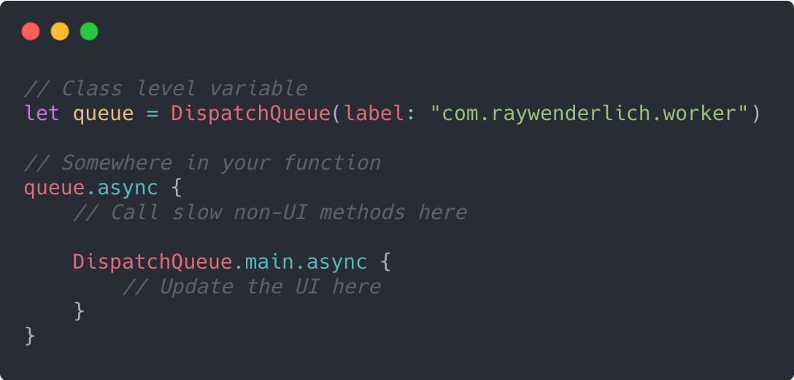

Є два API, які ви будете використовувати при паралельній роботі програми: Grand Central Dispatch (GCD) і Operations. Це не конкуруючі технології і вам не потрібно обирати з чим працювати, тому що Операції побудовані на основі GCD!
Grand Central Dispatch
GCD - це реалізація Apple бібліотеки мови C libdispatch. Його мета - поставити в чергу завдання, методи, або замикання, які можуть виконуватися паралельно, в залежності від доступності ресурсів; потім він виконує завдання на доступному ядрі процесора.
Note: Документація Apple іноді посилається на блок (block) замість замикання (closure), оскільки саме таку назву використовували в Objective-C. Ви можете вважати їх взаємозамінними в контексті паралельності.
Хоча GCD використовує потоки у своїй реалізації, вам, як розробнику, не потрібно турбуватися про те, щоб керувати ними самостійно. Використання GCD настільки просте, що Apple у своєму технічному описі щодо GCD 2009 року заявила, що для його застосування потрібно лише 15 інструкцій, тоді як для створення традиційних потоків може знадобитися кілька сотень інструкцій.
Всі завдання, якими GCD керує, потрапляють в керовані GCD черги типу «першим прийшов - першим пішов» (FIFO). Кожне завдання, яке ви відправляєте в чергу, потім виконується в пулі потоків, повністю керованих системою.
Note: Немає гарантії щодо того, над яким потоком буде виконано ваше завдання.
Синхронність та асинхронність
Завдання, яке додане в чергу, може виконуватися синхронно або асинхронно. При синхронному виконанні завдання ваш додаток буде очікувати і блокувати поточний цикл виконання до завершення задачі, перш ніж перейти до наступного кроку. Натомість, завдання, яке запускається асинхронно, запускається, але негайно повертає виконання вашому додатку. Таким чином, поки виконується перше завдання, програма може вільно запускати наступні задачі.
Note: Важливо пам'ятати, що, хоча черги засновані на FIFO, це не гарантує, що завдання будуть завершені в порядку їх відправлення. Процедура FIFO застосовується до моменту запуску завдання, а не до його завершення.
Загалом, ви можете виконати будь-яку довгострокову задачу, не пов'язану з роботою UI, і запустити її асинхронно у фоновому режимі. GCD робить це дуже просто за допомогою замикань з кількома рядками коду, наприклад так:
Ви дізнаєтеся все про DispatchQueue в Розділ 3: «Черги і потоки». У загальному випадку ви створюєте чергу, відправляєте їй завдання для асинхронного запуску у фоновому потоці і, коли вона завершена, ви делегуєте код назад в основний потік для оновлення UI.
Послідовні та паралельні черги
Черга, в яку відправляється ваше завдання, також має властивість бути послідовною або паралельною. Послідовні черги мають тільки один потік, що дозволяє виконувати тільки одну задачу в будь-який момент часу. Паралельна черга, натомість, може використовувати стільки потоків, скільки їх є у системі. В паралельній черзі потоки створюються і звільняються так, як це необхідо.
Note: Хоча ви можете сказати iOS, що хочете використовувати паралельну чергу, пам'ятайте, що немає гарантії, що одночасно буде виконуватися більш одного завдання. Якщо ваш пристрій iOS повністю зайнятий і ваш додаток конкурує за ресурси пристрою, то додаток зможе виконувати тільки одну задачу.
Асинхронність не означає одночасність
Хоча на перший погляд різниця здається незначною, але те, що ваші завдання асинхронні, не означає, що вони будуть виконуватися одночасно. Насправді ви можете відправляти асинхронні завдання в послідовну або паралельну чергу. Синхронність або асинхронність, просто визначає, чи повинна черга, в якій ви запускаєте завдання, чекати його завершення, перш ніж вона зможе запустити наступну задачу на виконання.
З іншого боку, класифікація чого-небудь як послідовного в порівнянні з паралельним вказує на те, скільки черга має доступних потоків для неї. Якщо задуматися над цим, то відправка трьох асинхронних завдань в послідовну чергу означає, що кожна задача повинна бути повністю завершена, перш ніж наступна задача зможе запуститися, оскільки доступний тільки один потік.
Операції
GCD відмінно підходить для загальних завдань, які потрібно одноразово запустити у фоновому режимі. Якщо вам знадобиться функціональність, яку слід використовувати повторно, наприклад, редагування зображень, ви, ймовірно, захочете інкапсулювати цю функціональність в клас. З допомогою підкласу Operation ви зможете досягти цієї мети!
Підклас Operation
Operation - це повністю функціональні класи, які можна відправляти в OperationQueue так само, як ви відправляєте замикання в DispatchQueue для GCD. Оскільки вони є класами і можуть містити змінні, ви отримуєте можливість дізнаватися, в якому стані знаходиться операція в будь-який момент часу.
Операції можуть існувати в будь-якому з наступних станів:
- isReady
- isExecuting
- isCancelled
- isFinished
На відміну від GCD, операція за замовчуванням виконується синхронно, і для її асинхронного виконання потрібно виконати більше роботи. Ви можете безпосередньо виконати операцію, але це майже ніколи не дасть очікуваного результату через синхронний характер операцій. Вам доведеться перемістити виконання операції з main потоку в OperationQueue, щоб продуктивність вашого інтерфейсу не постраждала.
Операції забезпечують більший контроль над вашими завданнями, оскільки тепер ви можете обробляти такі загальні потреби, як скасування завдання, створення звітів про стан завдання, включення асинхронних завдань в операцію і визначати залежності між різними завданнями. Глава 6 «Операції» надасть більш глибоке обговорення про використання операцій у вашому додатку.
BlockOperation
Іноді при роботі над додатком, який вже інтенсивно використовує операції, вам може знадобитися простіше, GCD-подібне, замикання. Якщо ви не хочете створювати DispatchQueue, ви можете замість цього використовувати клас BlockOperation.
BlockOperation (підклас Operation) управляє паралельним виконанням одного або декількох замикань в стандартній глобальній черзі (global queue). Але, будучи підкласом Operation, BlockOperation дозволяє скористатися всіма іншими можливостями операцій.
Note: Block operations виконуються паралельно. Якщо вам потрібно, щоб вони запускалися послідовно, вам необхідо відповідним чином налаштувати dispatch queue.
Способи використання
Немає чіткої вказівки щодо того, що вам слід використовувати у вашому додатку, GCD чи Operations. З GCD простіше працювати для загальних завдань, які потрібно просто виконати і забути. Операції надають набагато більше функціональності, особливо коли потрібно відстежувати завдання або зберігати можливість скасувати його.
Якщо ви просто працюєте з методами або фрагментами коду, які необхідно виконати, GCD - підходящий вибір. Якщо ви працюєте з об'єктами, які повинні інкапсулювати дані і функціональні можливості, вам з більшою ймовірністю знадобляться Operations. Деякі розробники навіть впадають в крайнощі, кажучи, що ви завжди повинні використовувати Operations, тому що Operations побудовані на основі GCD, а у керівництві Apple зазначається, що завжди слід використовувати найвищий рівень абстракції.
Зрештою, вам слід використовувати ту технологію, яка є найбільш доцільною і забезпечує максимальну довгострокову стійкість вашого проекту або конкретного варіанту використання.
У наступному розділі ви глибоко зануритеся в роботу Grand Central Dispatch, дізнаєтеся про різницю між потоками і чергами і про деякі труднощі, які можуть виникнути при реалізації паралелізму у вашому додатку.